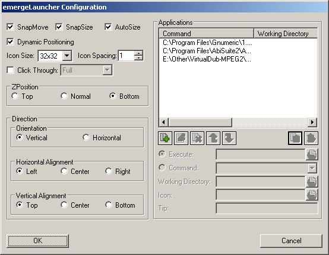

emergeLauncher provides a "Quick Launch" applet for Emerge Desktop.
emergeLauncher is configured by holding down the 'Ctrl' key and right clicking on the emergeLauncher window. This will display the configuration menu:

The About option displays the module's author and version and the current scheme's path and filename.
Load Scheme allows the user to browse and select a Scheme File.
Edit Current Scheme displays the Emerge Desktop Scheme Editor.
Reload Current Scheme allows to reload the current scheme after editing.
The Exit option closes the module. It can be restarted by running the executable file emergeLauncher.exe
Selecting the 'Configure' menu entry will display emergeLauncher's configuration dialog:

SnapMove toggles if the window should snap to the edge of other applets or the edges of the screen when moving.
SnapSize toggles if the window should snap to the edge of other applets or the edges of the screen when sizing.
Autosize toggles if the window should automatically adjust it's size to the number of icons present. If unselected then the user should set the size (see Usage below).
Dynamic Positioning toggles if the window should automatically change it's position when the desktop resolution changes.
Click Through toggles if the user can click through the applets.
Icon Size can be selected between 16x16, 32x32 or 48x48 pixel icons. Due to system limitations, 48x48 pixel icons can not be used under Windows 2000.
Icon Spacing defines the spacing in pixels between adjacent icons
Click Through toggles if the user can click through the applets. If Click Through is activated, the user can choose between two modes: Full (the whole applet is "transparent" to mouse input) or Background (only the background area is "transparent" but the user can click on the icons in emergeTray, emergeTasks, emergeLauncher, the text in emergeCommand and the miniature windows in emergeVWM). Important notes: 1) Full Click Through works for any level of opacity, from opaque to fully transparent; 2) Background Click Through automatically sets the background to transparent but does not change the scheme, this is a known limitation; 3) To manipulate an applet set to Full Click Through the user must press the Shift key: Shift+Control+LeftClick to move the applet, Shift+Control+RightClick to get the Config menu and Shift+Alt to resize the applet.
ZPosition defines the relative position of the window in the Z-axis i.e. from the screen to the user and can be set to Always on Top, Always on Bottom or Normal (behaves as a regular program window)
Orientation defines if the icons are set as a column (Vertical) or as a row (Horizontal). Independently of the the Orientation, the icons can have three options for Horizontal or Vertical Alignment. Horizontal Aligment can be set to: align to the Left of the applet (i.e. new items are added to the right), Center (i.e. expand in both directions in relation to the horizontal center) or to the Right. Vertical Aligment can be set to: Top of the applet, vertical Center or Bottom.
If emergeLauncher is not set to Autosize, when icons reach an edge they will grow (i.e. start a new row or column) according to the Horizontal and Vertical Alignments selected. Wrapping for the Center option is the same as for Top or Left, i.e. new lines are added under or the the right of a full column or row,
To Add  a new launcher item, the user should choose between an internal Command from the drop list or select an Executable and Working Directory (if appropriate) by using the Browse
a new launcher item, the user should choose between an internal Command from the drop list or select an Executable and Working Directory (if appropriate) by using the Browse  button. Additionally the user can choose an external Icon and type some text to appear as a Tip when the mouse is over the icon. The user should then click on Save
button. Additionally the user can choose an external Icon and type some text to appear as a Tip when the mouse is over the icon. The user should then click on Save  or Clear
or Clear  to start again.
to start again.
Important Note: empty spaces can be added to the emergeLauncher by adding a Separator item. Alternatively an user selected icon can be assigned to each Separator item.
By default the icon used is the first icon of the executable. To select a different icon the user should click the Browse button. The user can select a different icon (if the executable has more than one) or add an external icon. By default when adding an icon to a command which does not contain an icon (e.g. most internal commands) emergeLauncher will display the windows icon library SHELL32.DLL located in %SystemRoot%\system32\. Alternatively the user can use any library or executable that contains icons or icon files (.ico)

The Launcher items displayed in the list box can be Modified  or Deleted
or Deleted  by selecting the item from the list. If at any time the user adds, deletes or modifies incorrectly any Launcher button, he can undo changes by pressing the Cancel button. This will close the Configure box without saving any modifications since the dialog was opened. Pressing the OK button will save the current settings and close the configuration dialog
by selecting the item from the list. If at any time the user adds, deletes or modifies incorrectly any Launcher button, he can undo changes by pressing the Cancel button. This will close the Configure box without saving any modifications since the dialog was opened. Pressing the OK button will save the current settings and close the configuration dialog
Please notice: Icons are only updated after pressing OK or Cancel, i.e. when the emergeLauncher Configuration dialog is closed.
emergeLauncher settings are stored in HKEY_CURRENT_USER\Software\Emerge Desktop\emergeLauncher and consist of the following subkeys:
- Settings - all emergeLauncher related settings. Currently the options are:
- X - The position of the window on the x-axis (Default 0)
- Y - The position of the window on the y-axis (Default 0)
- ZPosition - The position of the window on the z-axis (window order - Default "normal")
- Height - The height of the window (Default 100)
- Width - The width of the window (Default 100)
- ClickThrough - True(1)/False(0) (Default False) Enables/disables the ability to click through the applets.
- VerticalDirection - The vertical direction for the icons (up or down - Default "down")
- HorizontalDirection - The horizontal direction for the icons (left or right - Default "right")
- DirectionOrientation - Specify the direction the icons should take (vertical or horizontal - Default "horizontal")
- AutoSize - Allows emergeLauncher to automatically adjust size to the existing number of application buttons (Default 0)
- Scheme - Path and filename of the scheme used (Default none)
- IconSize - Display size of the icons. Can be set to 16, 32 or 48 pixels (Default 16)
- IconSpacing - Space in pixels between icons (Default 1)
- SnapMove - snap to the edge of other applets and the side of the desktop when moving (Default 1)
- SnapSize - snap to the edge of other applets and the side of the desktop when sizing (Default 1)
- Icon1 - The icon for the first button
- Command1 - The application that will execute with the first button
- Tip1 - The tooltip for the first button
- ...
- IconN - The icon for the Nth button
- CommandN - The application that will execute with the Nth button
- TipN - The tooltip for the Nth button
- DynamicPositioning - Dynamic reposition emergeTray when the desktop resolution changes (Default 1)
Left clicking on the application icon as defined in the configuration will launch the application.
Holding down 'CTRL' while left clicking on the window will allow it to be dragged around the desktop. When the window nears the screen edge, it will snap to it, also, it will not allow itself to be dragged off screen. By default, the new position is stored in the X and Y settings in the registry so that they will be remembered on next start.
Holding down 'ALT' while left clicking on the border of the emergeLauncher window will allow it to be resized provided you don't have autosize enabled and the border is not set to 0.